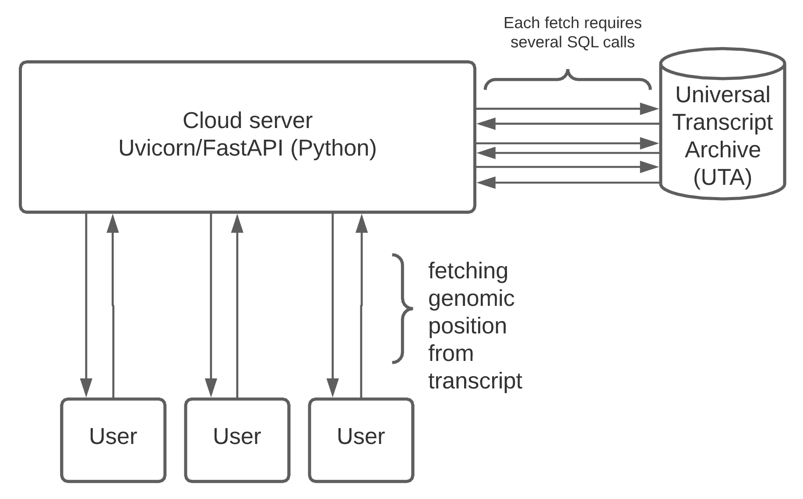

Thread Safety: A Cautionary Tale
James Stevenson
Outline
- Overview: sequential and asynchronous programming
- Our cast of characters
- What happened
- Threading the knot
Sequential and asynchronous programming
Sequential programming
Pros
- Simple
- Efficient
Cons
- If this was all that computers could do, we'd never get anything done
Wait, what?
(Pictured: where we'd be if we could only run programs sequentially [~metaphor?])That's right.
Sequential programming is a lie.
What's happening, then?
Context switches:
- Between different processes (~programs)
- Between different threads (~workers within a program)
Processes
Sam Wolfson, UWConcurrency
Sam Wolfson, UWOkay, so threads...?
- Like a process within a process ('lightweight process')
- Used to accomplish blocking tasks in an efficient manner
- Shared memory space
Our cast of characters
A fusion curation interface
Basic architecture

- "A modern, fast web framework for building APIs" (whatever that means)
- Give it an HTTP request and it'll handle/respond
- Used in most #wags projects

- "A lightning-fast ASGI server implementation"
- Handles HTTP requests asynchronously
- Great logo

- "Powerful relational database system"
- It stores tables of stuff
- We use it to store the Biocommons Universal Transcript Archive (UTA)
- Pretty good logo
- "the most popular PostgreSQL adapter for the Python programming language"
- Lets Python code talk to Postgres DBs
- Unfortunate name
Tying it all together
What happened
That sucks. What's happening?
- Multiple threads* are running lookup routines at once, using the same connection to the database.
- We make several queries to UTA per transcript lookup request.
- Wires are getting crossed - the response to one thread is getting sent to another.
What is to be done???
1) Drop Uvicorn
Older server software, which implements "WSGI" rather than "ASGI", doesn't have this problem, because it uses less thready threads
WSGI is less efficient for our use case
I tested this and it totally works, though
2) Threadsafe DB connections
Instead of a single DB connection, initialize a pool of connections
Lock the pool within a semaphore
We would have to code this ourselves, which seems very weird to say for some reason
sema-what?
Concurrency management structure that keeps a locked count of how many resources are available.
Maintains a count of available resources (including negative if demand exceeds supply).
Humorous aside
3) Drop psycopg2
I was 95% of the way through writing this presentation when I found out this was an option
Psycopg2 is the dominant Python Postgres client, but there are new, tenable alternatives designed specifically for ASGI/coroutines
This is probably the way to go (anticlimactic)